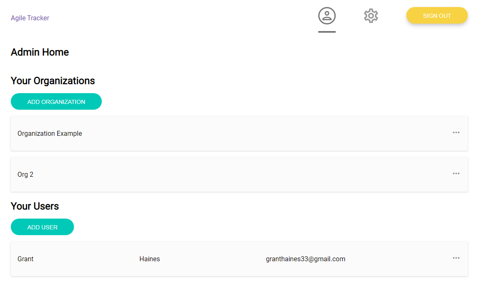

The Agile Release Compliance Tracker is a project I worked on as my capstone during my senior year at Oregon State University, sponsored by and created for the Supra Systems branch of the Carrier Global Corporation. Our team began work in October 2020 and finished in May 2021, presenting the project to the public at the OSU Engineering Expo in June 2021.
The vision of the project was to produce a checklist-based project management software that enabled Carrier's software development teams to coordinate their work using Agile Methodology. Users can create and use checklists to manage development pipelines, such as Agile sprint stages, pre-release QA testing, or review and test new features. The application is focused on providing a simple to use interface that minimizes the amount of training needed to use the software, a common problem with project management software. It is also intended to be flexible enough to work for the variety of teams who may be working on different aspects of a project.
Development prototype of the admin home page
The application is split into two sections: a back-end API and database, and a front-end web application. The purpose behind this design was to make it possible for future teams to implement alternate interfaces for the project, such as a mobile application. This also made it easier for the members of our team to work on different elements of the project without stepping on each others' toes.
The back-end application uses a Python framework called Flask to implement a RESTful API linked to a standard MySQL database server. User authentication and authorization is done using JSON web tokens, and we use several other Python packages to implement rate limiting and user email verification.
The front-end is a React-based web application. We chose this technology because other members of the team were already familiar with it, though it was a new experience for me personally. Using the framework made it easy to create a visual appealing and technically modular UI built with future expandability in mind.
My role on this team was primarily as a back-end developer, working on the RESTful API and the database design. I implemented many of the user- and organization-related API calls, as well as the task and checklist comment API's. When we were almost finished with the back-end application, I moved to the front-end and implemented the main user home page, where logged-in users can see their parent organizations and currently assigned tasks. In addition to the work I did on the codebase of the project, I also did quite a bit of team's organization and record-keeping.
As of the time of creating this page, we are still actively working on the project, so I will be holding off on a retrospective until we conclude.